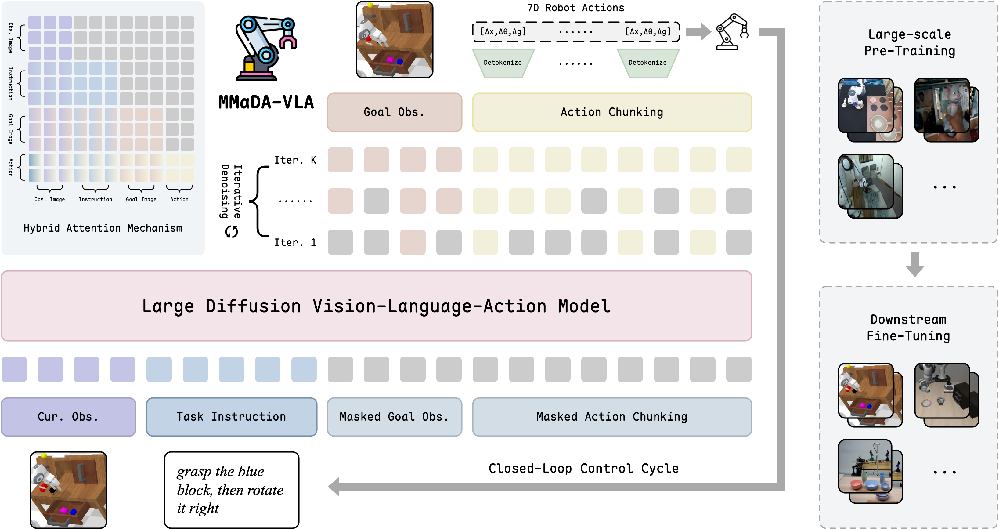
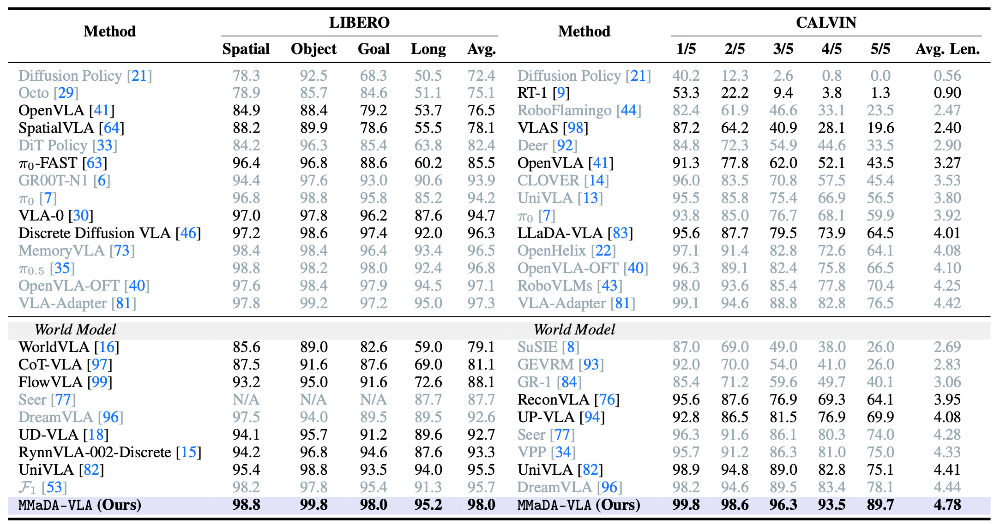
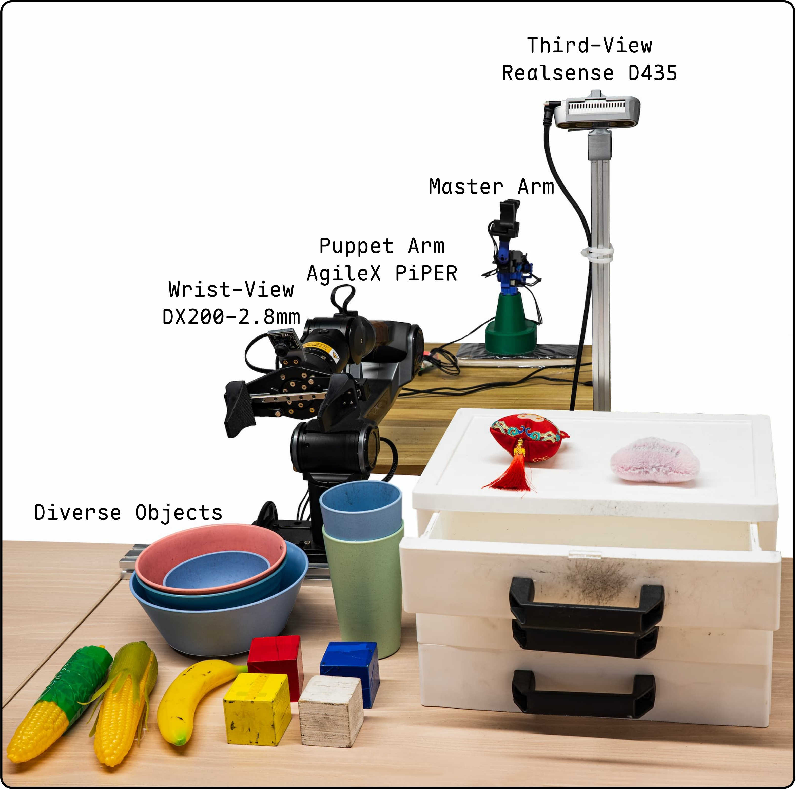

Large Diffusion Vision-Language-Action Model
with Unified Multi-Modal Instruction and Generation
Vision-Language-Action (VLA) models aim to control robots for manipulation from visual observations and natural-language instructions. However, existing hierarchical and autoregressive paradigms often introduce architectural overhead, suffer from temporal inconsistency and long-horizon error accumulation, and lack a mechanism to capture environment dynamics without extra modules. To this end, we present MMaDA-VLA, a fully native pre-trained large diffusion VLA model that unifies multi-modal understanding and generation in a single framework. Our key idea is a native discrete diffusion formulation that embeds language, images, and continuous robot controls into one discrete token space and trains a single backbone with masked token denoising to jointly generate a future goal observation and an action chunk in parallel. Iterative denoising enables global, order-free refinement, improving long-horizon consistency while grounding actions in predicted future visual outcomes without auxiliary world models. Experiments across simulation benchmarks and real-world tasks show state-of-the-art performance, achieving 98.0% average success on LIBERO and 4.78 average length on CALVIN.
Single backbone for multi-modal understanding and generation
Native token space for language, vision, and robot actions
Joint generation of goal observations and action chunks
Improved temporal consistency without error accumulation
A fully native pre-trained large diffusion VLA model

Language, images, and robot actions are embedded into a common discrete token space, enabling unified multi-modal modeling.
A single backbone is trained with masked token prediction to jointly model all modalities through iterative denoising.
Goal observation and action chunk are generated in parallel, enabling global refinement and better long-horizon planning.
Iterative denoising provides order-free refinement, grounding actions in predicted visual outcomes without auxiliary modules.
State-of-the-art performance on simulation benchmarks


Different tasks may have varying speedup effects
pick the banana into the blue big/small bowl
stack the white block on the blue/red/yellow block
1. open the drawer; 2. place the pink/red plush keychain/white block; 3. close the drawer
organize the bowls and cups on the table
@article{liu2025mmadavla,
author = {Yang Liu and Pengxiang Ding and Tengyue Jiang and Xudong Wang and Minghui Lin and Wenxuan Song and Hongyin Zhang and Zifeng Zhuang and Han Zhao and Wei Zhao and Siteng Huang and Jinkui Shi and Donglin Wang},
title = {{MMaDA-VLA}: Large Diffusion Vision-Language-Action Model with Multimodal Instruction and Generation},
journal = {CoRR},
volume = {abs/xxxx.xxxxx},
year = {2025},
url = {https://arxiv.org/abs/xxxx.xxxxx}
}